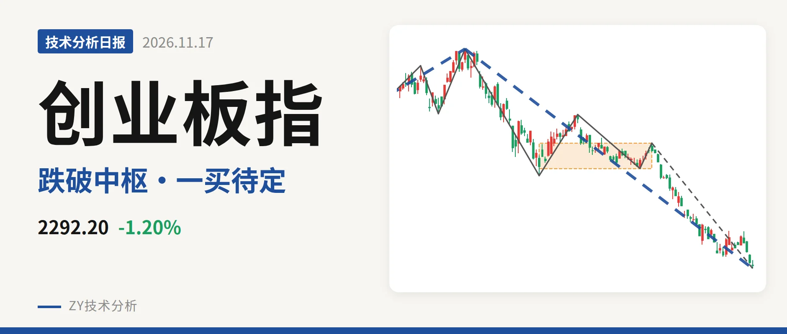
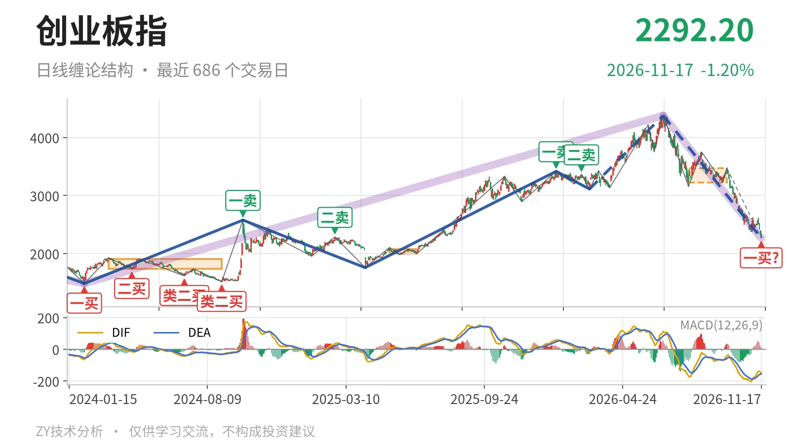
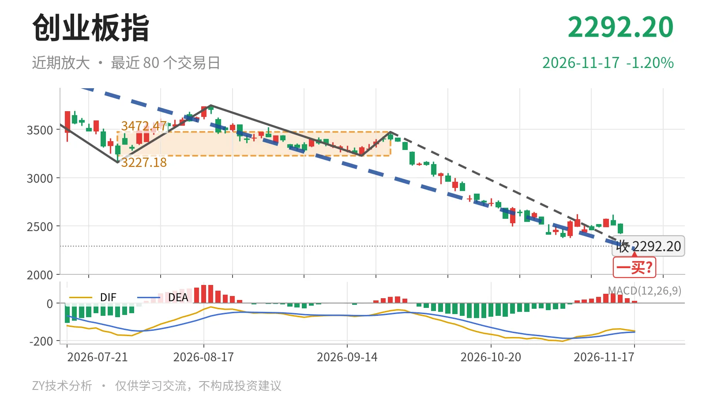

创业板指｜失守3227点中枢，一买未定

最近日线中枢 3227.18—3472.47点，收盘位于中枢之下
一句话：6月25日以来的日线下跌段未结束，11月17日一买暂定。
🧭 走势结构：6月25日以来的日线下跌段还在延续
当前仍处6月25日以来的日线下跌线段中，该线段没有结束。更大级别看，2021年7月22日至2024年2月5日下跌段已经结束，2024年2月5日至2026年6月25日上涨段涨195.4%但未正式结束；6月25日以来的下跌段跌48.3%，回落幅度已破坏上涨节奏。日线线段以6月25日以来的下跌段为当下方向，其内部已走5笔，最后下跌笔仍在延续。

📍 中枢与位置：价格位于最近中枢下方，中枢下移
最新收于2292.20点，处于7月30日至9月22日的日线笔中枢3227.18—3472.47点下方，低于下沿约29.0%。该中枢本身没有完成，价格跌破下沿后中枢明显下移。同时价格回到2015年9月2日至2018年4月2日线段中枢1841.22—2299.86点内，贴近上沿2300点，尚未离开该更大中枢。
🔄 买卖点：11月17日一买只是暂定
11月17日盘中低点2263.74点出现日线笔一买，所在笔9月22日至11月17日仍在延续，因此只能作暂定的一买。若后续继续下破2264点，该买点会被破坏，只对应更小级别转折。上方1月13日一卖3416.84点、2月25日二卖3363.18点仍在结构上压制。线段级三买3111.88点已经失守，该三买只对应小级别转折，反弹不能站回3112点前，较大级别难转强。

⚖️ 背驰：面积收敛但DIF同步新低，底背驰不成立
9月22日至11月17日的下跌笔仍没有结束，绿柱面积1107，小于6月25日至7月30日下跌笔的1837；但DIF低点由-171.1下移至-204.5，价格新低同时DIF低点同步新低。这不是“新低不新弱”，只说明绿柱面积暂时收敛。最新MACD柱12.4，DIF -149.5、DEA -155.7仍在零轴下方，柱转正更像下跌笔内部反抽。底背驰尚不能成立。
👀 关键位置观察：反抽看3227点，站回才可能转中枢扩展
反抽若回不到3227点上方，结构上构成日线笔中枢三卖，后续仍是下跌延伸。重新站上3227点，9月22日以来的下跌更可能只是中枢扩展。下方看2283点附近与2122点附近：守住2283点一线，尚有2022年4月27日至2023年8月4日线段中枢上沿2282.65点承接；跌破2122点，则进入该线段中枢下沿2122.32点内部，日线下跌会进一步打开。当前结构偏弱，弱在价格持续位于最近中枢下方且未回到下沿。
⚠️ 本文为基于公开行情数据的缠论技术结构记录，由程序自动计算并生成，仅供学习交流，不构成任何投资建议。市场有风险，投资需谨慎。